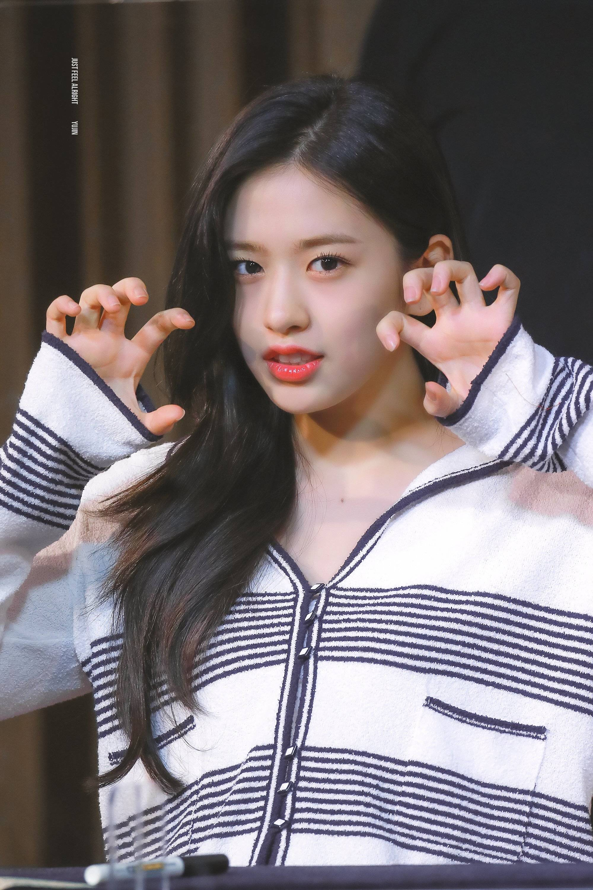

IVE（韓語：아이브）是韓國的女子音樂組合，由STARSHIP娛樂於2021年12月1日推出。組合由六名成員組成，包括：安俞真（Yujin）、高元靜（Gaeul）、雷伊（Rei）、張榮妍（Wonyoung）、李彩領（Liz）和妮可（Leeseo）。IVE的名稱代表著“I HAVE”與“I VE（在...）”，寓意著成員們具備所有成功所需的特質和實力。
成員:
安俞真（Yujin）
高元靜（Gaeul）
雷伊（Rei）
張員瑛(Wonyoung)
金志垣（Liz）
李賢瑞（Leeseo）
安俞真（Yujin）：
安俞真（韓語：안유진），是韓國女子音樂組合 IVE 的成員之一，同時也是組合的領隊。她在 2021 年 12 月 1 日隨組合出道之前，已因參加選秀節目《Produce 48》和作為女團 IZ*ONE 成員而廣為人知。
早期生活和訓練:
安俞真於 2003 年 9 月 1 日出生於韓國。從小對表演藝術抱有熱情的她，於 2018 年通過參加 Mnet 的選秀節目《Produce 48》進入娛樂圈，最終成功出道成為 IZONE 成員，並在團體中活動直至 2021 年解散。在 IZONE 活動期間，她接受了嚴格的舞蹈、聲樂和表演訓練。
出道與IVE:
安俞真在 IZ*ONE 解散後不久，作為 IVE 的領隊在 2021 年底出道。IVE 的出道單曲《ELEVEN》迅速獲得了極大的成功，她的領導能力和舞台表現力得到了粉絲和業界的高度評價。
特別活動和合作:
作為 IVE 的領隊，安俞真參與了多項音樂節目和商業活動，增強了她的公眾形象和市場吸引力。她也活躍於各種媒體和時尚活動中，並與多個品牌合作，展現了她的多面性和影響力。
影響力和公眾形象:
安俞真以其穩定的領導和出色的表演技巧，在 IVE 中扮演著核心角色。她不僅是組合的領隊，也是公眾眼中的偶像代表，深受年輕粉絲的喜愛。她的公眾形象清新脫俗，並通過各種公益活動展示了她的社會責任感。
高元靜：
高元靜（韓語：고원정），是韓國女子音樂組合 IVE 的成員之一，於2021年12月1日隨組合出道。她在組合中主要擔任舞蹈和副唱角色。
早期生活和訓練:
高元靜於2002年9月24日出生於韓國。自小對舞蹈有著極大的熱情，這驅使她在年輕時就加入舞蹈學校學習各種舞蹈風格。在高中時，她通過星探被 STARSHIP 娛樂發掘，並開始了她的練習生生涯。在練習生期間，她接受了嚴格的舞蹈、聲樂和表演訓練，為未來的偶像生涯做好準備。
出道與IVE:
高元靜在 2021 年與 IVE 一起出道，她的舞蹈技巧和舞台表現在出道單曲《ELEVEN》中得到了展示。她的精湛舞技和舞台魅力迅速獲得了粉絲和觀眾的認可。
特別活動和合作:
作為 IVE 成員之一，高元靜參與了多個品牌代言和商業活動，透過這些活動，她不僅提升了自己的專業形象，也增強了與粉絲的互動。此外，她經常參與組合的多樣化宣傳活動，展現了她作為藝人的多面性和可塑性。
影響力和公眾形象:
高元靜以其出色的舞蹈能力和親和力贏得了公眾的喜愛。她在 IVE 中的表現不僅顯示了她的藝術才能，也展示了她作為年輕一代偶像的影響力和潛力。她的公眾形象積極向上，經常參與公益活動，以實際行動推動社會正向價值。
雷伊（Rei）：
雷伊（韓語：레이），本名星野礼美（日語：ほしの れいみ），是韓國女子音樂組合 IVE 的日本籍成員，於2021年12月1日隨組合出道。在組合中，雷伊擔任主Rapper和副唱。
早期生活和訓練:
雷伊於2004年2月3日出生於日本。她自幼對音樂和舞蹈表現出強烈的熱情，這最終促使她追隨夢想成為一名表演者。在日本度過了初期的學習階段後，雷伊決定前往韓國追求更專業的訓練。她於2019年加入STARSHIP娛樂，成為練習生並接受了嚴格的舞蹈、聲樂和表演訓練，為其偶像生涯做準備。
出道與IVE:
雷伊在 2021 年與 IVE 一起出道，首支單曲《ELEVEN》迅速在各大音樂排行榜上取得了顯著的成功。她的獨特饒舌技巧和舞台表現在組合中獲得了廣泛的認可，使她迅速成為粉絲和公眾關注的焦點。
特別活動和合作:
作為 IVE 的一員，雷伊參與了多個商業活動和品牌合作，這不僅增加了她的曝光度，也提升了她的專業形象。她的多語言能力使她在與國際品牌的合作中扮演關鍵角色，加強了IVE在全球市場的影響力。
影響力和公眾形象:
雷伊以其多才多藝和國際化的背景受到高度評價。她不僅在韓國音樂界留下了印記，也在日本和其他國家的粉絲中擁有一定的影響力。雷伊的積極和陽光的形象使她成為年輕一代的榜樣，她的公眾形象正面且充滿活力，常參與多元文化交流和公益活動。
張員瑛(Wonyoung)：
張員瑛（韓語：장원영），是韓國女子音樂組合 IVE 的成員之一，於2021年12月1日隨組合出道。在加入 IVE 之前，她已因為參加選秀節目《Produce 48》並成為女團 IZ*ONE 成員而廣為人知。
早期生活和訓練:
張員瑛於2004年8月31日出生於韓國。她自幼對表演藝術表現出強烈的興趣，早早開始接受舞蹈和聲樂訓練。她的才藝和天賦在參加《Produce 48》時得到了展示，最終使她成功出道成為 IZ*ONE 的一員。
出道與IVE:
張榮妍在 IZ*ONE 活動結束後，轉而加入 IVE 並在 2021 年底出道。她的出色表演能力和舞台魅力使她迅速成為團隊的核心成員和公眾焦點。
特別活動和合作:
作為 IVE 的面孔之一，張員瑛參與了眾多高端品牌代言和媒體活動，她的時尚感和獨特魅力使她成為時尚界的寵兒。此外，她也活躍於各種電視節目和公開活動中。
影響力和公眾形象:
張員瑛以其出色的表演技巧和亮眼的外表廣受歡迎，成為了韓流文化的重要代表之一。她的公眾形象正面且受到年輕一代的廣泛喜愛。
金志垣（Liz）：
金志垣（韓語：김지연），藝名 Liz，是韓國女子音樂組合 IVE 的成員之一。她於2021年12月1日隨組合出道，主要擔任主唱角色。
早期生活和訓練:
Liz 出生於2004年11月21日。她從小就展現出對音樂的強烈興趣和才華，這驅使她追求專業的音樂訓練。在加入 STARSHIP 娛樂成為練習生之前，Liz 積累了豐富的聲樂和表演經驗，這些經驗為她的偶像生涯打下了堅實的基礎。
出道與IVE:
Liz 在 IVE 的出道作品《ELEVEN》中擔任主唱，她的聲音具有獨特的音色和強大的表現力，迅速在樂迷中留下了深刻的印象。她的歌聲不僅技術純熟，而且能夠深情地傳達歌曲的情感，使聽眾產生共鳴。
特別活動和合作:
作為組合的主唱，Liz 參與了多項音樂相關的活動和表演。她在各種音樂節目和公開演出中的出色表現不僅展示了她的唱功，也提升了她的公眾形象。此外，Liz 也涉足了一些品牌代言和廣告活動，逐步擴大了她的影響力。
影響力和公眾形象:
Liz 以其優美的聲音和親和力滿滿的形象在粉絲中極受歡迎。她的公眾形象清新脫俗，並以其正面的態度和專業精神在韓國及國際音樂界贏得了尊敬和愛戴。
李賢瑞（Leeseo）：
李賢瑞 Leeseo（韓語：이서），本名 Lee Hyun Seo（韓語：이현서），是韓國女子音樂組合 IVE 的最年輕成員，於2021年12月1日隨組合出道。她以其清新的外貌和舞台上的活力著稱。
早期生活和訓練:
Leeseo 於2007年2月21日出生於韓國，是 IVE 中的 maknae（最年輕成員）。自幼展現對表演藝術的興趣，Leeseo 在年輕時就開始接受舞蹈和聲樂訓練。她的才藝很早就被星探發現，隨後加入了 STARSHIP 娛樂成為練習生，在嚴格的訓練下磨練她的表演技巧。
出道與IVE:
Leeseo 在非常年輕的年紀就與 IVE 一起出道，立刻成為公眾和粉絲關注的焦點。她在組合的出道單曲《ELEVEN》中展示了她的舞蹈能力和舞台魅力，迅速獲得了樂迷的喜愛和認可。
特別活動和合作:
儘管年紀輕輕，Leeseo 已經參與了多個品牌代言和公關活動，展現了她超越年齡的專業態度和多才多藝的一面。她的清新形象和親和力使她成為品牌和媒體的熱門選擇。
影響力和公眾形象:
Leeseo 的公眾形象非常正面，以其年輕、活潑的特質和專業的表演能力受到粉絲的愛戴。她不僅是 IVE 的重要成員，也是韓國新一代偶像的代表之一，展示了年輕偶像的無限潛力和魅力。